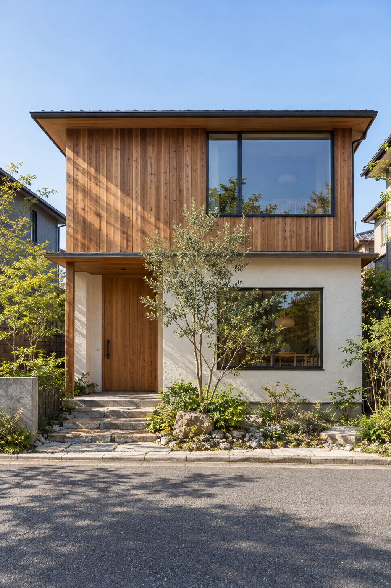
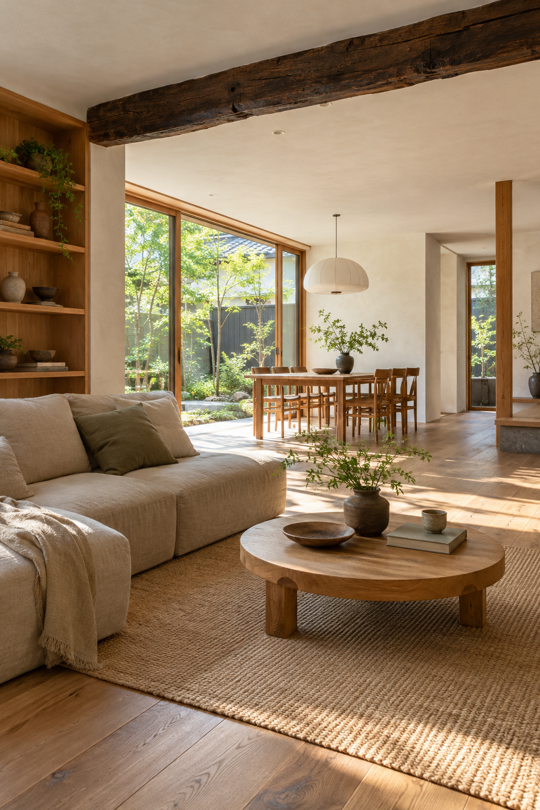
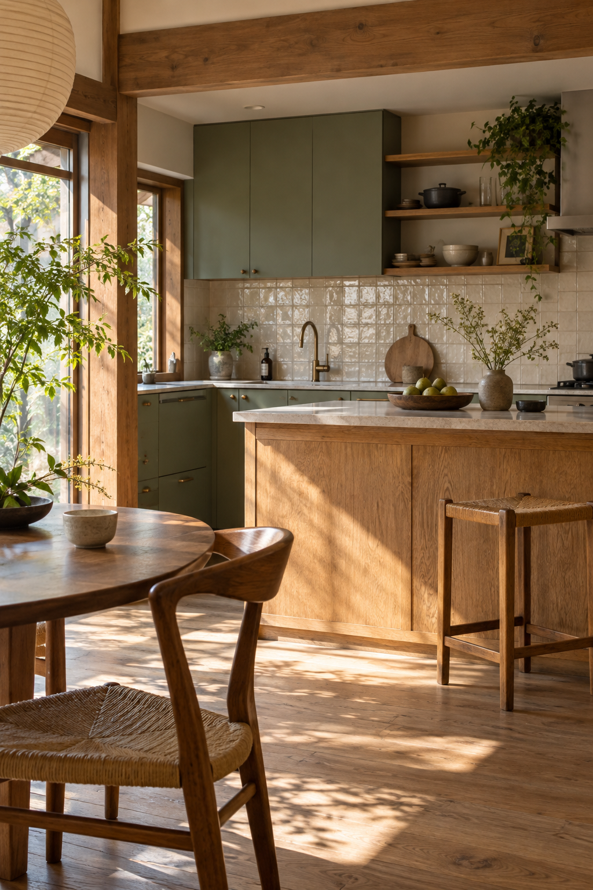
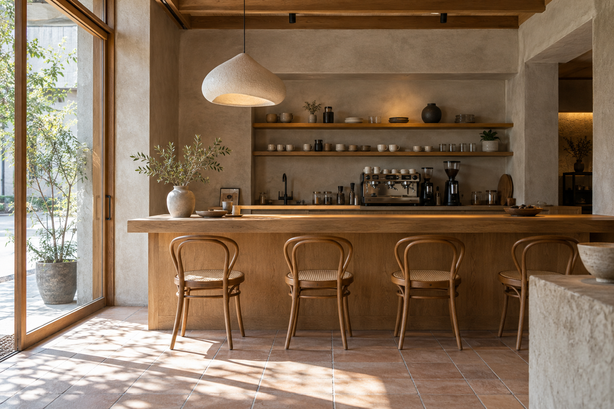
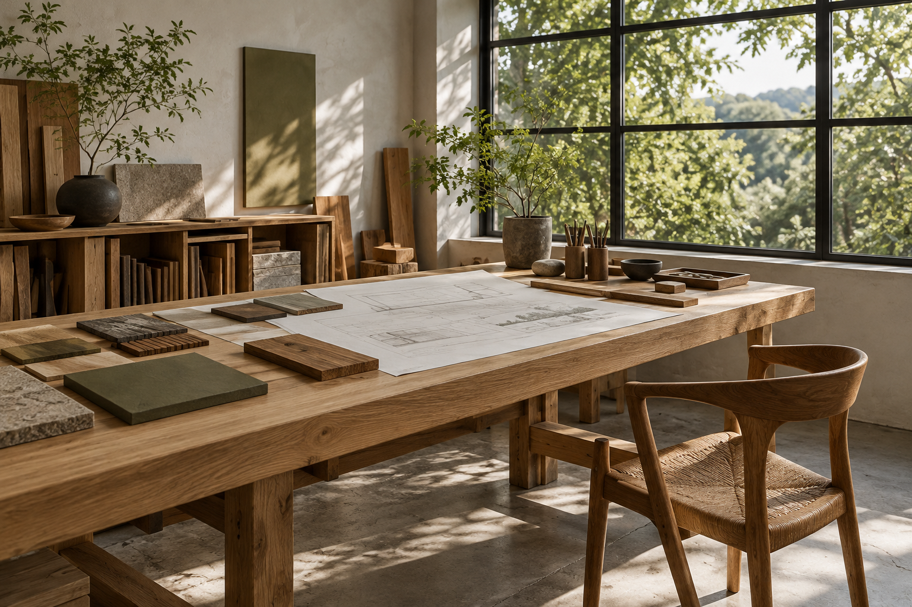
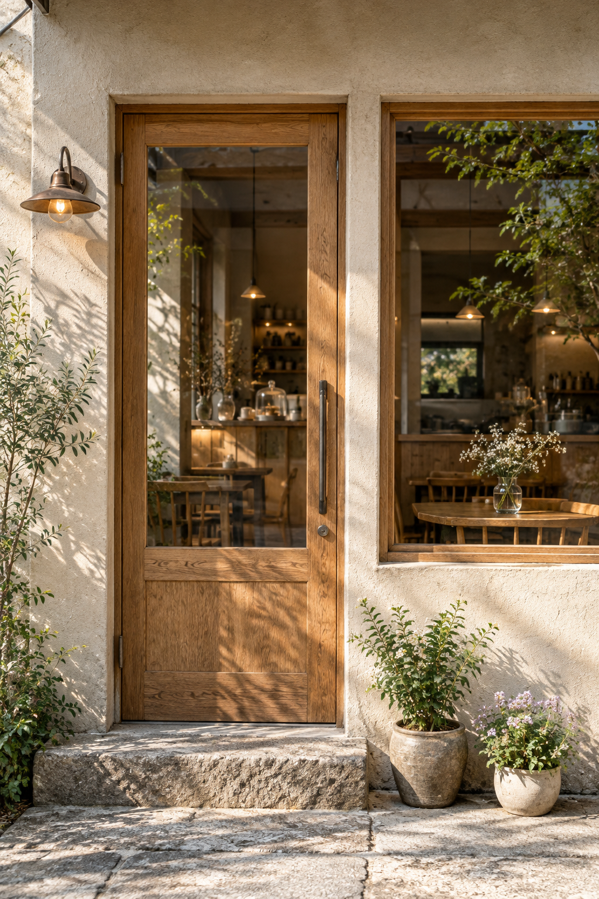

暮らしに、
次の余白を。
Spaces for the life
you have yet to imagine.
01 / WHAT WE DO変えるところ。
SERVICE
RENOVATION
REFORM
STORE DESIGN
FURNITURE
変えるところ。
残したいところ。
時間を重ねた家も、これから始まるお店も。
そこにある良さを見つけ、
今の暮らしにちょうどいい空間へ。
Keep what matters.
Make room for what’s next.その場所の続きを、一緒に。
Make room for what’s next.その場所の続きを、一緒に。
02 / WHO WE ARE
COMPANY
建物だけでなく、
そこで過ごす時間をつくる。
- スタジオ名
- 余白設計室 YŌHAKU
- コンセプト
- 住まいと、小さなお店の再編集。
- 主な仕事
- 住宅リノベーション・店舗設計
部分リフォーム・家具のデザイン - 活動エリア
- 滋賀・京都の街を想定
架空の会社として制作したデザイン見本です。
03 / LET’S TALK
CONTACT
まだ、まとまっていなくても。
話すところから、はじめましょう。
© YŌHAKU / FICTIONAL DESIGN STUDIO